About
人情 ：①他人への情けや思いやり／②人間の自然な心の動き
ここ数年で私たちは、拡張現実〔Augmented Reality〕にずいぶん親しくなりました。
美人になれるカメラに、街角からモンスターが飛び出すゲーム。このテクノロジーは私たちの日常をもっと楽しく、もっと刺激的に「拡張」してくれます。
思えば、世界中と繋がれるＳＮＳも現実を「拡張」する技術の一つでした。テクノロジーの進歩は現実の拡張そのものなのかもしれません。
一方、広がりすぎた現実はかえって私たちを窮屈にし、現実のサイズを錯覚させることもあります。
SNS上でふと綴った自分の気持ちが見知らぬ人から批判されるなんて、まるで自分の気持ちさえ他人のためにあるかのようです。
そんな現実を前に、本展は「人情の拡張」をテーマに掲げました。
人情には「情けや思いやり」という意味の他に「人間の自然な心の動き」という意味があります。
今回、展示する作品は全て、気にも留めないコトや慣れ親しんだモノに焦点を当てるものです。
人のための気持ちと自分だけの心の動き、この２種類の「人情」が現実の姿を変えてくれる体験を目指しました。
来場されるみなさまが、よりよい現実の姿を見つけることを心から願っております。
Humanity :①compassion and sympathy for others / ②natural human feelings
We have become familiar with the term "Augmented Reality" in recent years.
Apps that enable us to look prettier, and games showing monsters popping out from a street corner.
These technologies make our daily lives more enjoyable and exciting by augmenting reality.
When we think about it, Social Networking Services also "augment" our reality of connecting with the rest of the world.
To this extent, technological advances, in general, may provide some types of augmented reality.
This reality, however, could make us feel more cramped, and we may miscomprehend the size of our physical reality.
When we are criticized for expressing our feelings on SNS, we almost feel like our thoughts should comply with the so-called norms.
To confront this reality, we present our exhibition, "Augmented Humanity."
"Ninjo (人情)" in Japanese means "compassion and empathy" or "natural human feelings," and could also be translated as "humanity."
This exhibition consists of a wide range of works that focus on small instances of our life we usually don't pay attention to or are very familiar with.
We aimed at providing an opportunity to change the way we see reality through experiencing two kinds of "humanistic" feelings: one for others and another for yourself.
We sincerely hope all the visitors would find a new aspect of reality through our exhibition.
Outline
| 日時 |
2020.1.18 (sat) 13:00-19:00 2020.1.19 (sun) 10:00-18:00 |
|---|---|
| 場所 |
東京都渋谷区恵比寿西 1-17-2 http://www.a-m-u.jp/ |
| 主催 |
早稲田大学文化構想学部 クリエイティブメディアR&Dゼミ |
| 監修 |
ドミニク・チェン准教授 |
| お問い合わせ |
cmrd.seminar@gmail.com |
Works1
-
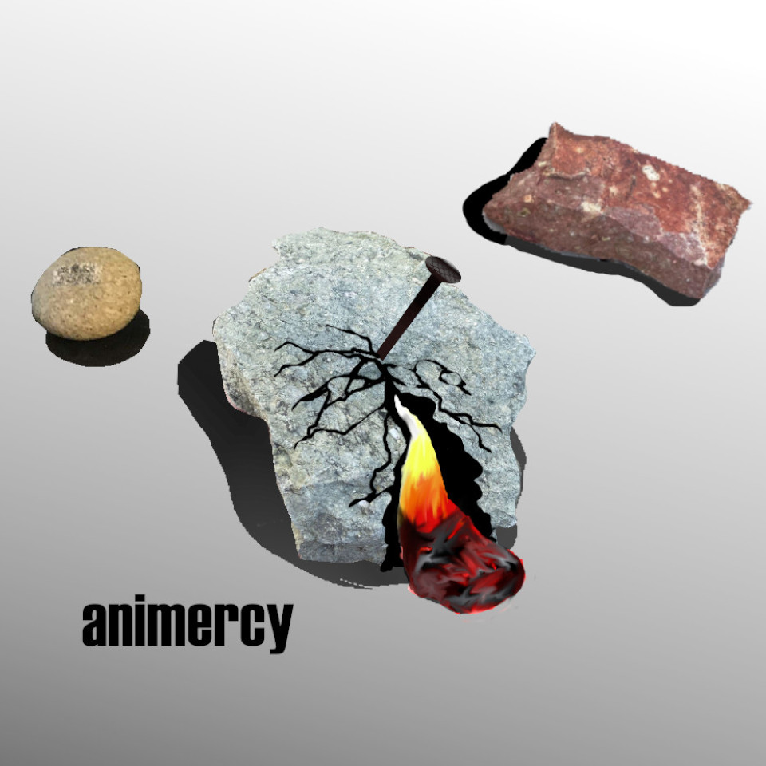animercy animercy
-
 ドット・フルサト pxcels of memories
ドット・フルサト pxcels of memories -
魂の営業マンDJプレイ DJ KARAOKE in da building!!!
-
しゅぱむ

制作：林崎美侑/小林未奈
スパムメールは日常に紛れ込んでいる悪意であり、その文面はいかにも「らしく」書いてあります。人の興味を引こうとする文章からにじみ出る作家性、そして表現の面白さ……それはまるで一つの滑稽な物語のようです。
スパムメールという物語は詐欺師が一方的に送りつけてくるものであるため、これらに騙される被害者は一見受動的に見えます。しかし実際にはこの一連の詐欺の構造においてスパムメールの受信者は、メールの開封や返信、その内容の真意の判断など、常に能動的な選択を行なっているのです。
本作品では可愛いRPGゲームの見た目でスパムの面白さを表現する一方、プレイヤーをスパムメールと同じように一方的に能動的な選択に迫られる状況に置くことで、その面白さと怖さを自分の体験として経験できるような作品となっています。
He's coming
Miyu Rinzaki / Mina Kobayashi
Smartphones are essential to our lives nowadays, but are we aware of the hidden risks of this reality we live in? Spam is one of the evils we face every day. The texts are intentionally written to confuse people; however, their ways to attract people’s attention are sometimes creative and ingenious, even hilarious.
Spams are sent one-sidedly by the scammer. So it seems that their victims are merely passive beings. However, those victims in most of the situations make their own self-induced choices through opening the emails and replying to them. They even try to understand the intention of the scammer.
In this role-playing game, players can experience how exciting and fearful the spams can be, by making their own active choices.
 しゅぱむ He's coming
しゅぱむ He's coming -
写ルンですが unphoto
-
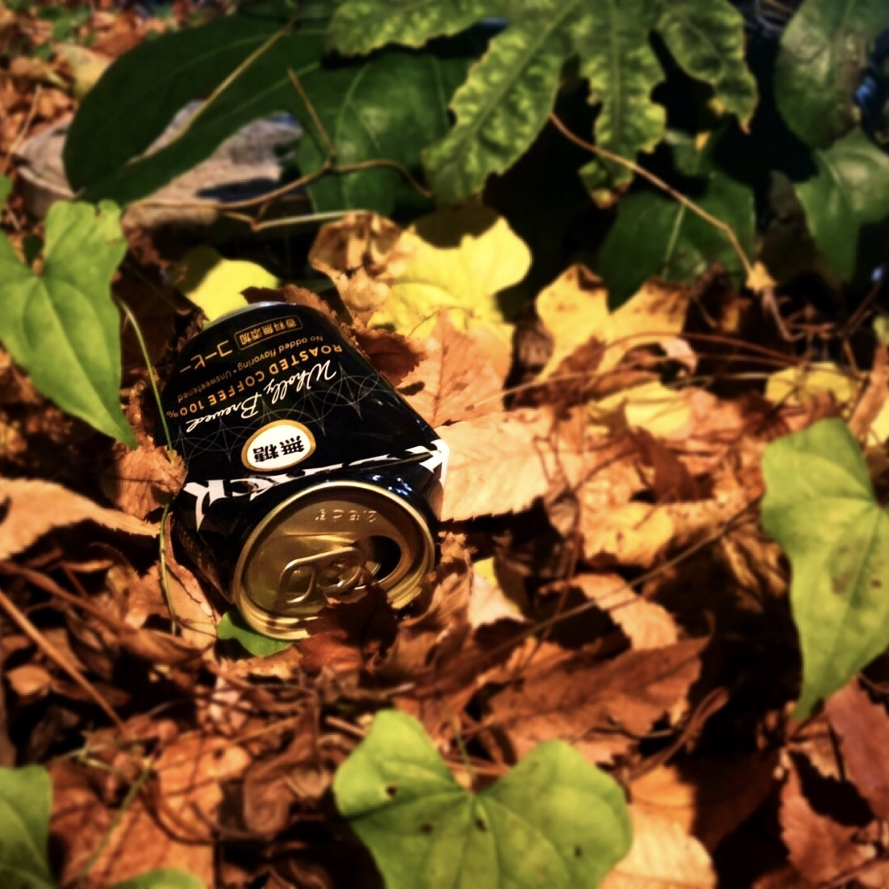(非)日常デザイン (un)usual design
-
Interactive Animation
 PNG.PNG)
制作：佐々木杏奈/河本のぞみ
コミュニケーションとは何でしょうか。言語的要素のほかにも、非言語的な願望や、共感、想像、沈黙が潜んでおり、私たちの普段の会話に大きな影響を及ぼします。そういった非言語的ファクターの関わりを目の当たりにする機会は少ないです。今回の実験では、ファクターがどのように生じ発達していくかを可視化するために粘土とアニメーションを使用しました。
掴む、ちぎる、刺す、つぶすといった粘土に対するアクションは、過去の個人のリアクションの積み重ねである粘土の造形への反応です。
あなたが粘土に対して与える変化は作品の一部として映像に残ります。
そのリアクションの積み重ねを見ることであなたは何を感じるでしょうか。
Interactive Animation
Anna Sasaki / Nozomi Kawamoto
What is "communication"? It consists not only of linguistic elements but also of non-verbal factors such as desire, empathy, imagination, and silence. These elements have a significant influence on our daily conversations.
However, it is hard to discern the impact of non-verbal communication. To visualize the occurrence and development of non-verbal elements, we use clay animation.
The audience’s interactions with the clay, such as grabbing, tearing off, pricking, and crushing, are the reactions to the clay’s shape, which is an accumulation of the previous audience’s actions.
All the changes will be recorded as part of animation.
What do you perceive when you see the growth of reactions?
.PNG) Interective Animation Interective Animation
Interective Animation Interective Animation -
オモタミ W. O. W
-
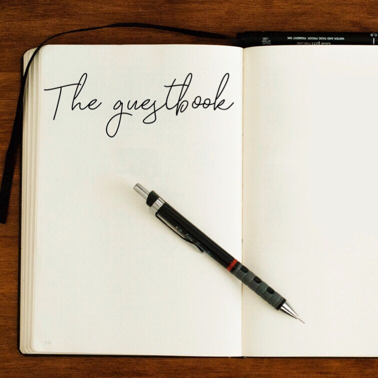The guestbook The guestbook
Works2
-
あなたは私の夢を見るか Do You Dream of Me
-
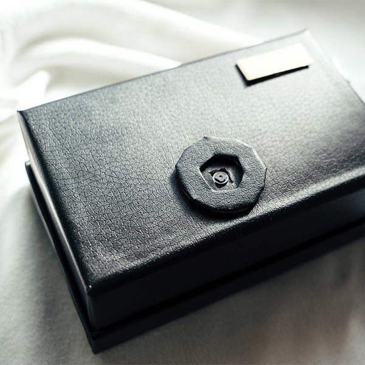
不便益デジタルカメラ
.jpg)
制作：宮崎遥
デジタルデバイスが発達し、誰もが気軽に写真を撮れるこの時代。何枚も連写したその写真、見返しますか？手軽さゆえに、撮影の本当の価値を見失っていませんか？
本作品はそんな現状に一石を投ずる不便だからこその益を提唱するデジタルカメラです。不便から見つめ直す、新しい撮影のかたち。
Benefits of the Inconvenience of Digital Cameras
Haruka Miyazaki
Today, everyone can take pictures quickly, thanks to the spread of smartphones. But how often do we look back at the photos taken in sequence? Maybe we have lost the real value of photography because of its simplicity.
This is a digital camera that advocates the benefit of being inconvenient to create a stir in the current situation. This is a proposition of a new form of photography, reconsidered from the perspective of inconvenience.
不便益デジタルカメラ Benefits of the Inconvenience
of Digital Cameras -
LaserPainting
.png)
制作：石田祐暉
本作はLaserPainterという制作環境のもとで制作された作品と、その制作過程を記録したものです。
LaserPainterはレーザー光の軌跡がプロジェクションされるという基本機能のもと、画家が操作可能な様々な描画エフェクトやパラメーターを備えた複雑性を伴うジェネラティブな制作環境です。
この制作環境ではレーザーポインターが筆となり、壁やスクリーンがキャンバスとなります。
画家の筆致や描画から、画家がこの制作環境とどのような関係を築きながらLaserPaintingをおこなっているのかご覧ください。
LaserPainting
Yuki Ishida
This is a record of the artworks produced by the participants under the operating environment of LaserPainter.
LaserPainter is a complex, generative operation environment with a variety of drawing effects and parameters that can be manipulated by painters, based on the projected trajectory of laser light. In this operation environment, the laser pointer becomes a brush, and the walls and screens become canvases.
See how the painter performs LaserPainting by building a dynamic relationship with this operating environment.
.png) LaserPainting LaserPainting
LaserPainting LaserPainting -
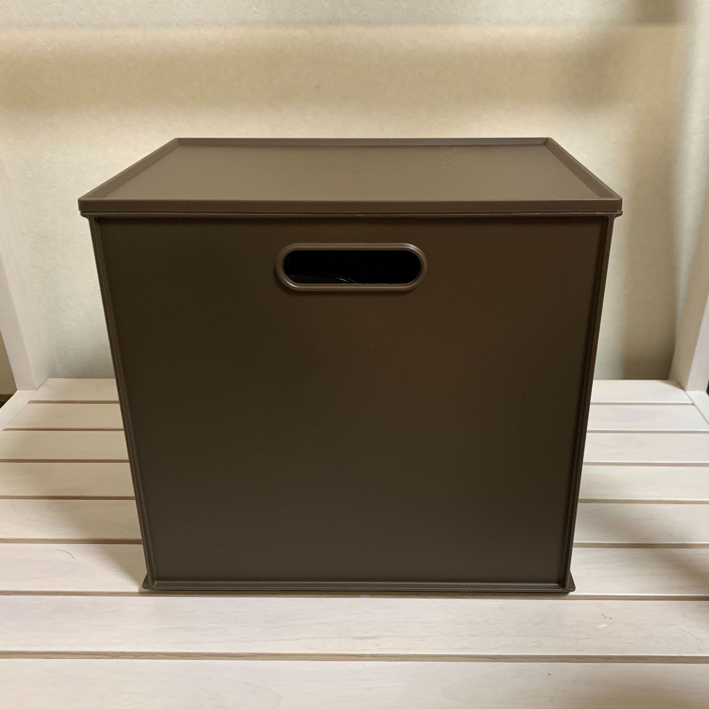音楽家具 Furnitune
-
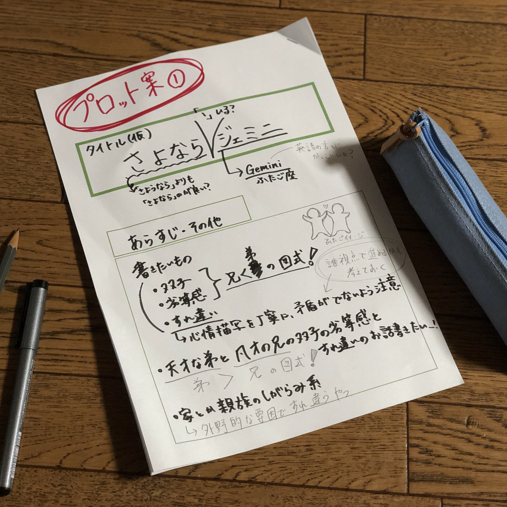プロット投稿サイト Plot Posting site
-
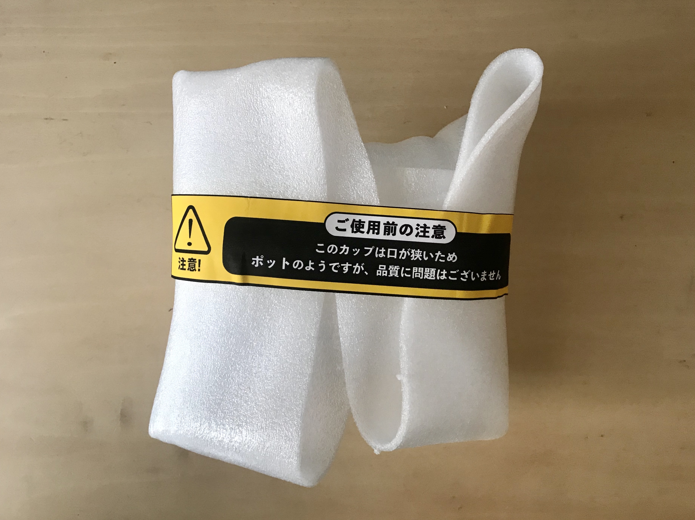
bias-labeled packing

制作：高橋二稀
毎日、誰かが自分の容姿を気にしています。
身体的なジェンダーバイアスが蔓延した社会の中で、こうあるべきと言うバイアスに怯えています。
男性だから高身長でないといけませんか？女性が筋肉質ではダメでしょうか？
バイアスは、ビリビリに破いて捨てましょう。あるいは、笑い飛ばすのが一番です。
日々笑い飛ばせば、レッテルは「くだらないレッテル」に変わるはずです。
毎日、およそ1,180万個の宅配便が開封されています。本作品では、人ではなくこれらの配達される品物たちにレッテルを貼ります。
日々あなたのもとに届く、くだらないレッテルを存分に笑ってください。無抵抗にレッテルを貼られた品物たちは、どこか私たちに似ています。
bias-labeled packing
Niki Takahashi
Most people care too much about their appearance. They are scared of the society which is full of physical gender biases. Do men have to be tall only because they are men? Can’t women be muscular?
Let’s tear off those biases. Or, maybe it's best to laugh them off. If you laugh them away every day, they will become frivolous labels.
Every day in our society, about 11.8 million packages are opened. In this work, we label these delivered goods, not people. Take a moment to open these packages, and laugh off the ridiculous labels you receive every day.
These goods that are labeled without resistance somewhat resemble us.
bias-labeled packing bias-labeled packing -
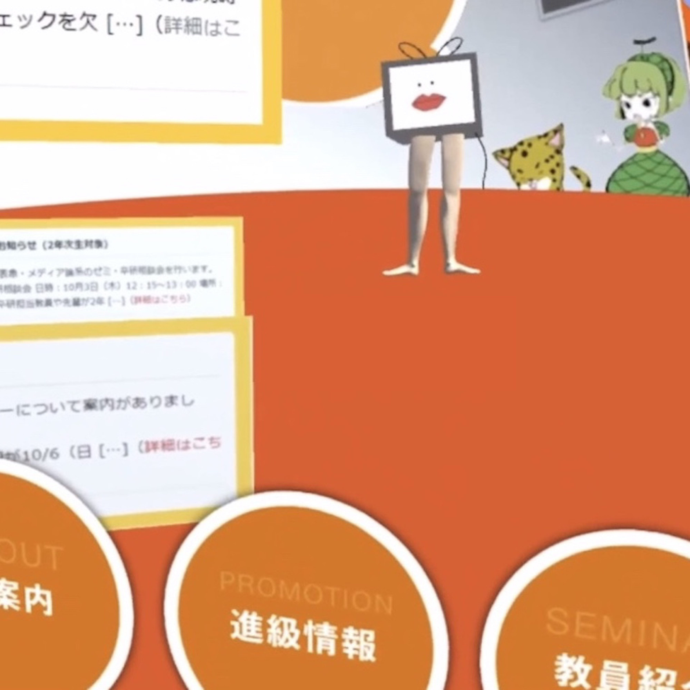Webサイト窓枠解放運動 The liberation movement
of websites' window frame -
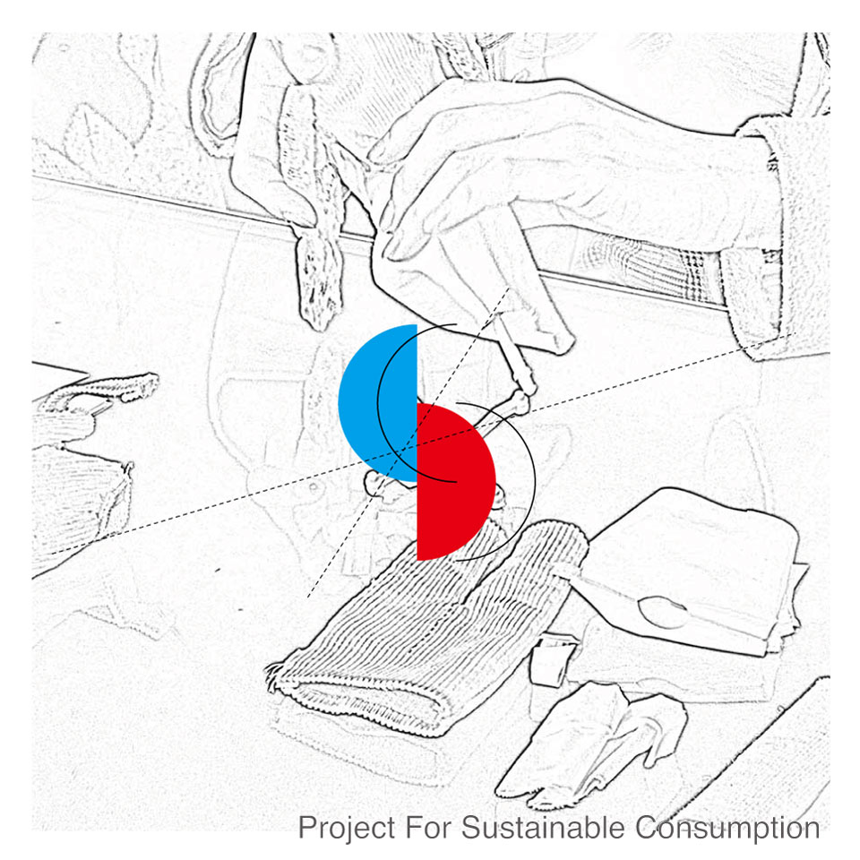服交換真景 Workshop For Slow Fashion
-
poemeshi poemeshi
-
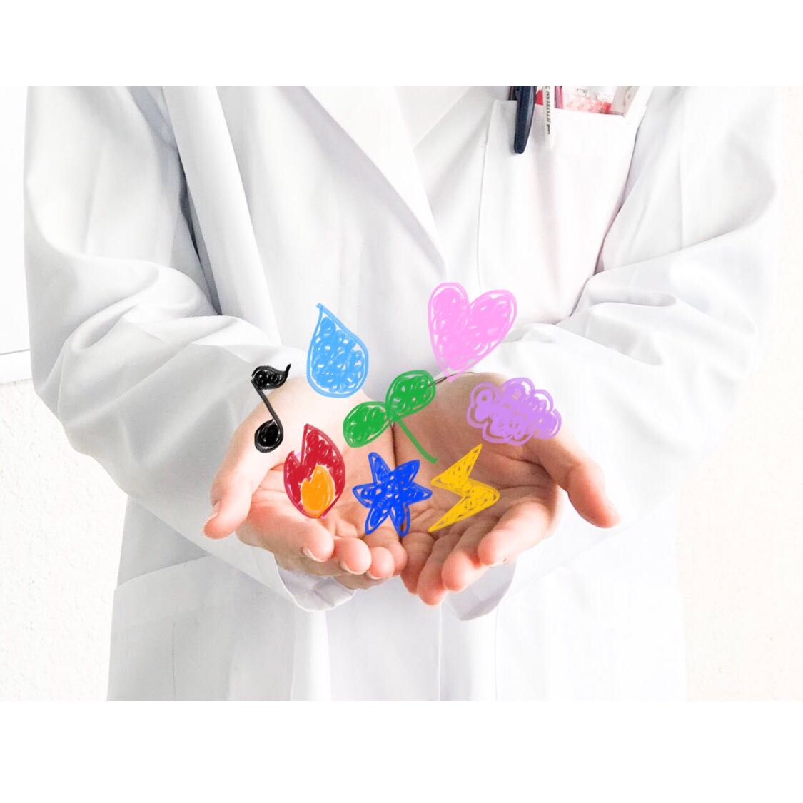感情サプリ Supplements for Emotions
-
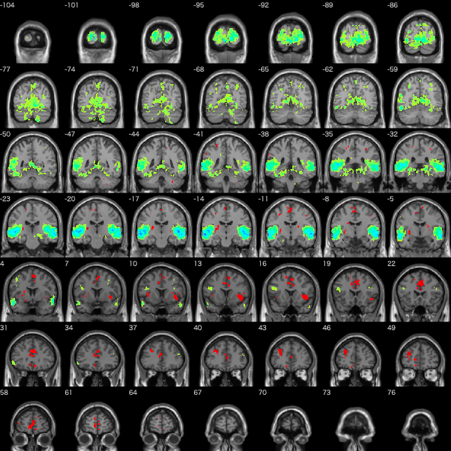Emotion sequence Emotion sequence
-
Japaniizu-Ingurisshu Japaniizu-Ingurisshu
Staff
| 運営マネージャー | 栗本佳歩 / 西大知郎 / 多田夏帆 |
|---|---|
| 会計 | 天野凛 / 高橋二稀 / 上田悠人 |
| 記録 | 宮崎遥 / 山本藍衣 / 高橋二稀 / 藤田彩人 |
| 広報 | 髙谷蓮実 / 河本のぞみ / 神代真優 / 林崎美侑 / |
| 展示レイアウト | 小田崇仁 / 米原秀香 / 花井佑佳 / 金廣裕吉 / 高野瑞季 |
| グラフィック | 菅沢若菜 / 島野史子 / 小林未奈 / 宮崎遥 |
| コピーライト | 平田純也 / 須藤菜々美 / 竹田毬恵 / 冨岡夏生 |
| 英訳 | 佐々木杏奈 |
| Webデザイン | 佐久間響子 / 糸井康子 / 宮崎遥 |
| メンバー | 藤原奏人 / 内田佐和 /吉満駿太郎 / 石田祐暉 |
Access

〒150-0021 東京都渋谷区恵比寿西１丁目１７−２
交通アクセス
JR山手線・埼京線・湘南新宿ライン 恵比寿駅西口 徒歩4分
東京メトロ日比谷線 恵比寿駅4番出口 徒歩2分